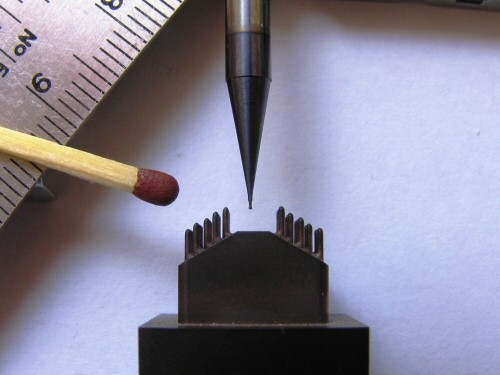
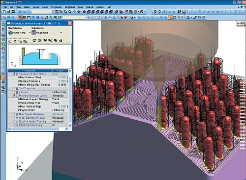
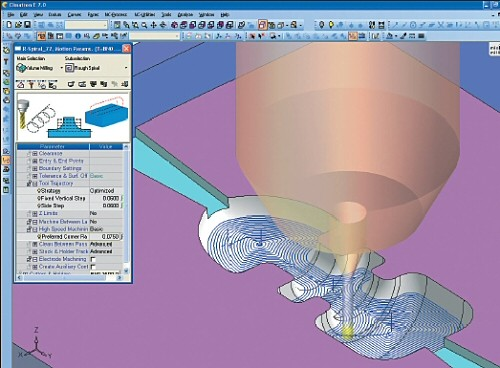
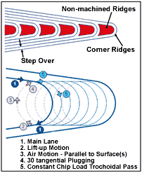

|
Çeviri: Ahmet Barýþ Kuldaþlý
CAD/CAM/CAE Müh.
UMTAÞ A.Þ.
Þubat 2006, Ýstanbul
Not: TurkCADCAM.net Dergisi 2. Sayýsý için planlanmýþ bu makale, Þubat 2008'de TurkCADCAM.net Portalý'ndan yayýna baþlamýþtýr.
Minyatür kalýp ve mikro parçalarý iþlemek için kullanýlan takým, kesici uç ve fikstürleri tasarlamada karþýlaþýlan sorunlar oldukça yýldýrýcýdýr. Ayný durum bir tezgah operatörünün kesim iþlemini göremeyeceði ya da duyamayacaðý bir durumda takým yollarýný optimize etmesinde de geçerlidir. Standart frezeleme iþleminin aksine, bir operatör takýmýn kesim sýrasýnda nasýl davrandýðýný inceleyerek kesimi optimize etmek için gerekli iþlemleri yapamaz. Ek olarak, tipik frezeleme iþlemleri için kullanýlan takým yolu stratejileri micromilling'de kullanýlmak üzere küçültüldüðünde iþe yaramayabilir.

Buna raðmen týbbi, elektronik ve optik uygulamalarda bu tarz parçalara artan bir ihtiyaç duyulmaktadýr. Bu trendi takiben Aachen, Almanya'daki, Fraunhofer Ýmalat Teknolojisi Enstitüsü (IPT) yakýn bir zamanda tezgah imalatçýlarý ile kalýp imalatçýlarýný bir araya getirerek etkin mikro kalýp imali stratejileri ve prosesleri geliþtirme amaçlý bir micromilling araþtýrma projesine sponsor oldu. Micromilling için bir NC yazýlýmý oluþturulmasýndaki zorluk 0.01 mikronluk toleransta takým hareketinin etkin bir þekilde hesaplanmasýdýr. Cimatron (Novi Michigan) IPT projesine katýlan yazýlým þirketlerinden biridir. Sonuç, Cimatron E NC programýnýn micromilling iþlemlerini içerecek bir þekilde geliþtirilmesi oldu.
Mikro seviyede yapýlan iþlemler basitten çok ötedir. Mikro parçalarý iþleyebilmek için ulaþýlmasý gereken yüzey kalitesi ve iþleme toleransýna ulaþmak için, yenilikçi teknikler ve takýmlar gerekmektedir.
Bu sorunu aþmak için, Cimatron 20 yýllýk takým imalatý tecrübesini, uluslar arasý bilim enstitüleri ve öncü makine kuruluþlarý ve dünya standardýnda bir Ar-Ge takýmýyla yükseltti.
Sonuç ise: eþsiz bir algoritma ve buna ilintili mikro ortam iþlerini ölçümlendirmeyi etkin hale getiren bir takým NC araçlarý.
Micromilling'de uzmanlaþan bir ürün sorumlusu olan Uri Shakked, micromilling uygulamalarýnda takým yollarý oluþturulmasý için þu beþ baþlýðý öne sürmektedir.
1) Micromilling'e uygun frezeleme stratejileri geliþtirmek;
Yüksek hýzda frezeleme (HSM) ve micromilling arasýnda benzerlikler bulunmaktadýr. Köþelere yaklaþýrken takým yollarý yuvarlatýlmalýdýr ve bu yuvarlatma takým cinsine ve ilerleme miktarýna baðlýdýr. Mikromlling iþleminde yuvarlatma belli deðerlerin altýnda gereksiz hale gelmektedir. Örnek olarak 0.2'lik bir yuvarlatma çok fazladýr çünkü tipik micromilling yanal adýmlarý çok çok küçüktür (yaklaþýk 0.01 mm). Bu örnekte yuvarlatma deðeri yanal adýmýn 20 katýdýr, ki bu ardýþýk pasolar arasýnda geniþ boþluklar oluþmasý, fazla maksimum talaþ yüksekliði ve düþük yüzey kalitesi anlamýna gelir.
Cimatron tarafýnda geliþtirilen sýfýr bindirmeli trokoidal metodu bu tip çýkýntýlarý temizlemeyi sunmakta. Bu metot ilgili tüm bölgeleri trokodial stilde iþlemektedir, ancak çifte iþlemeyi engellemek için takým geri gitme hareketleri parça yüzeyinden Z ekseninde yükseltilmiþtir. Daha sonra takým, tanjantý takým yoluna izleyen ileri hareketlerde daldýrýr (bir sonraki sayfadaki resme bakýnýz).

Resimde görüldüðü gibi, 0.1mm çapýndaki takýmlarla frezeleme,
hem tezgah hem de CAM yazýlýmlarý açýsýndan zorluklar oluþturur.
HSM yüksek kesme ilerlemesi kullanarak talaþýn kesme sonucu oluþan ýsýyý atmasýný; yüksek iþ mili hýzlarý ile yüksek ilerleme hýzlarý saðlanmasýný; yüksek ilerleme hýzlarý ile iþleme zamanýnýn azaltýlmasý ve küçük yanal adýmlarla kesme yapabilmeyi saðlar. Ancak ilerleme hýzý takýmýn kesici aðzýna düþen maksimum talaþ miktarýyla sýnýrlýdýr. Micromilling kesici uçlarý çok küçük çaplara sahip olduðundan yüksek ilerleme hýzý üretemeyecek kadar küçük mil hareketi hýzlarýna sahiptirler, bu da maksimum kullanýlabilir ilerleme hýzýný sýnýrlar. Örnek olarak, 10 mm'lik kesici uçla 100 m/dak hýzda bir ilerleme hýzý saðlamak için mil hýzý yaklaþýk 3200 dev/dak olmalýdýr. 0.1 mm'lik bir kesici uçla ile iþ mili 320000 dev/dak'da dönmelidir. Bu deðerde bir iþ mili hýzýna ulaþmak günümüzde mümkün deðildir. 0,1 mm'lik bir kesici uç ile kullanýlabilecek maksimum ilerleme yaklaþýk olarak 15 m/dak'dýr, bu da HSM olarak deðerlendirilmekten çok uzaktýr.

2) Konvansiyonel kesim, genelde týrmanarak kesmeden daha etkindir;
Micromilling iþlemlerinde konvansiyonel ya da týrmanma kesme kullanma seçimi iþlenecek parça yüzeyinin özelliðine baðlýdýr. Mikro kalýplar ve mikro parçalar üzerindeki unsurlar göz önüne alýndýðýnda, konvansiyonel frezeleme genel olarak seçilen frezeleme þeklidir.
Konvansiyonel frezelemenin, micromilling'e en uygun olduðu yerler takýmýn uzun olduðu ve iþlenecek parçanýn kalýnlýðýnýn çok düþük olduðu yerlerdir. Kesici takým malzemeye daldýðý anda aralarýndaki kuvvet artar ve kesici aðýz parçanýn içine çekilme eðilimine girer. Bu, yumuþak malzemeler ve narin unsurlar için kararlý bir kesme hali saðlar.
Ancak, konvansiyonel frezeleme takýmýn kesici aðzýný zarar verebilme potansiyeline sahiptir. Kesici aðýz kesmeyi tamamladýðýnda malzemeden geri çýkar. Kesime doðru dönerek geri gelirken malzemeye dalar. Bu, kesici aðzýn hýzlý bir þekilde yön deðiþtirmesine sebep olan ve takým ömrünü kýsaltan kuvveti oluþturur.
Týrmanma frezelemede kesici uç malzemeye maksimum talaþ büyüklüðünde kenetlenir ve de takýmla parça birbirini itme eðilimi gösterirler. Freze takýmý, iþlenecek parça ve kesici takým titreþimlerin oluþmamasý için yeterince robust olmalýdýr. Aksi halde kesici takým ömrü kýsalýr ve yüzey kalitesi düþük olur.
Saðdaki resim: Sýký bir radyusu frezelerken oluþan çýkýntýlar sýfýr bindirmeli trokodial takým yolu kullanýlarak temizlenebilir. Bu metotta takým geri gelme hareketi iþlenecek parçanýn Z ekseninde yükseltilir daha sonra ileri hareketin devamýnda daha iyi bir yüzey kalitesi saðlamak için takým yoluna tanjant olarak dalar.
3) Kabayý ve finiþi ayný anda yapmak gerekli olabilir;
Kaba ve finiþ pasolarý geleneksel olarak ayrý yapýlan, farklý iþ mili hýzlarý, ilerleme hýzlarý ve kesme derinliði kullanýlan iþlemlerdir. Ancak bu micromilling iþleminde mümkün olmayabilir, özellikle minyatür parçalardaki yüksek ve ince cidarlarý veya sütunlarý iþlerken. Kaba iþleminden sonraki cidar kalýnlýðý finiþ iþlemi için yeterince destek saðlamayacaktýr, bu da cidarlarýn titreþmesine ya da muhtemelen kýrýlmasýna yol açacaktýr. En azýndan cidar yüzeyi finiþi kabul edilemez olacaktýr.
Micromilling'de, ince cidarlar iþlerken , kaba ve finiþ ayný anda tek bir iþlemde yapýlacak þekilde birleþtirilmelidir, katman katman Z ekseninden aþaðý taraflarý deðiþtirerek yapýlmalýdýr. Kesici uç kesici uç ve cidar arasýnda tek bir temas noktasý olacak þekilde ayarlanmalýdýr.
4) Sabit takým yükü saðlanmalýdýr;
Standart kalýp yapýmý uygulamalarýnda, makine operatörü ilerleme deðeri, manüel olarak arttýrýr, gerektiðinde takým deðiþtirir ya da daha etkin olmasý için takým yolu manüel olarak deðiþtirilir. Micromilling'de parça ve takýmlarýn minyatür olmalarýndan dolayý, operatörün iþlem sýrasýnda pratik olarak hiçbir þey görmesi ya da duymasý mümkün deðildir. Bu yüzden micromilling yazýlýmý sabit bir talaþ yükünü hassas bir þekilde saðlamasý gerekmektedir.
Cimatron yazýlýmý kalan talaþý tanýr ve bu bilgiyi takým yükünde ayarlamalar yapmak üzere bütün proseste kullanýr. Bu frezeleme zamanýný kýsaltýr bunla beraber narin micromilling takýmýný kýrýlmaktan korur. Ýþlenen parçanýn þeklinin bariz bir þekilde deðiþtiði kaba iþleme operasyonu sýrasýnda yazýlým kalan her katmandan sonra kalan talaþ miktarýný simüle eder. Bu, takýmýn daha önceden önceki katmanlarca temizlenmiþ kýsýmlara girmesini saðlar, neticesinde kýsa takýmlar derin kýsýmlara girebilir.
Bir temizleme operasyonu sýrasýnda, sistem aþýrý malzeme tespit edebilir ve otomatik bir þekilde tekrar kaba iþleme operasyonunu tekrar eder. Tekrar kaba alma iþlemi takým kýrýlmalarýný engeller, sabit takým yükünü saðlar ve yüksek yüzey kalitesini oluþturur. Kaldýrýlan talaþ miktarýna baðlý olarak, yazýlým otomatik olarak ilerleme hýzý üzerinde deðiþiklik yapar ya da muhtemel olarak takým yolunu birkaç aþaðý pasoya böler.
Takým kýrýlmasý riskini en aza indirmek, iþleme zamanýný düþürmek ve takým ömrünü uzatmak için, CimatronE devamlý ve otomatik bir þekilde mikro seviyede kalan talaþ miktarý bilgisini saðlar ve günceller. CimatronE Micro Milling ayrýca rampa ve helisel dalmayý destekleyen kendisine tam entegre NC stratejileri sunmaktadýr, bu þekilde pürüzsüz ve devamlý bir kesici uç giriþi saðlanmaktadýr. Sistem bunun yanýnda ileri seviyede yüksek hýzda kesim (HSC) stratejilerini desteklemekte, bu da homojen takým yollarýný temin emektedir.
5) CAD ve CAM arasýndaki dosya çevrim sorunlarýna dikkat edin;
Ayrýk CAD ve CAM uygulamalarý arasýnda oluþan dosya çevrim sorunlarý frezeleme iþlemlerinin hassaslýðýný bariz bir þekilde etkilemektedir ve bu sorunlar micromilling sýrasýnda daha da artmaktadýr. Örnek olarak çevrim hatasýndan oluþan, büyük bir parça üzerindeki iki yüzey arasýnda 0.005 mm'lik bir boþluk sorun teþkil etmeyebilir çünkü parça cilalanabilir. Cilalama, minyatür kalýplarda ya da mikro parçalarda mümkün deðildir, doðal olarak boþluk mikrofrezelenmiþ bir parçada açýkça belli olacaktýr.
Neredeyse tüm CAM programlama iþi belli bir geometri düzeltme iþlemi gerektirir, bu da CAM yazýlýmý içeriðinde CAD yeteneklerini bulunmalýdýr. Kalýp yapýlýrken, soðutma ve enjeksiyon deliklerinin içinin iþlenmemesi için üstleri kapatýlýr. Ayrýca, yüzeyler, baþka bir kurulumda iþlenecek ve draft açýsý verilecek bölgeleri korumak için geniþletilmelidir. Parça geometrisini oluþturma veya deðiþtirme yetisi, takým yolunun programlanmasýna tesir etmektedir.
Takým için CAD iþi iþleme prosesinin ihtiyaçlarýný bilen bir takým imalatçýsý tarafýndan yapýlmalýdýr. Birçok durumda, belli bir geometri düzeltmesinin gerekliliði sadece programlama sürecinde belli olur. Saðlam bir veri arayüzü, otomatik sabitleme rutinleri ve direkt arayüzlerle, öncü geliþtirme sistemlerine - CATIA, Unigraphics ve Pro/ENGINEER gibi - Cimatron veri transferi sýrasýnda kalitenin kaybolmamasýný garantiye alýr. Boþluklar, bindirmeler ve yüzeyler arasýndaki pürüzlülük gibi geometri problemleriyle karþýlaþýldýðýnda, Cimatron, 0,01 mikrona kadar toleransa kadar inen dahili imalat için tasarým geometri onar fonksiyonlarý sunmakta.
Kaynak:
|